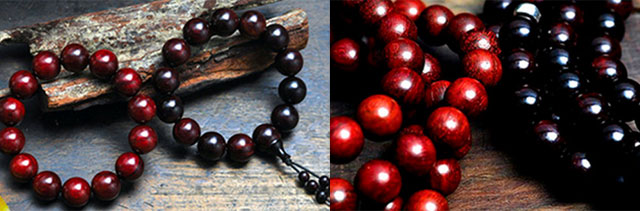

［ 诺 ］诚信者，天下之结也
我们承诺24小时内发货，店内全部真品，假一罚十，收到宝贝后，您可以 先鉴赏，满意后再确认收货，不满意请联系客服退货，请放心购买。遇见就 是缘，您可以随时与我们联系，一起探讨紫檀相关知识。欢迎加入微信， 和关注我们的公众号，我们会不定期更新小叶相关知识。微信：guyixuanfozhu 微信公众号：guyixuanfozhu_zt
［ 示 ］部分产品展示
［ 问 ］常见问题
小叶紫檀为什么会掉色？会影响皮肤健康么？
经常有买家问为什么我戴了紫檀，掉色了，手腕被染红了？ 是不是假的，或者是染色的？其实这是小叶紫檀的特性，不必惊讶，无需怀疑其品质。 在我国古代，小叶紫檀被用于染织业，作为染料用来染红布。所以这不能叫做染色，我们要弄清染色的概念，染色是有一个外加的颜色盖在原来的本色上，磨的时间一长，外面的颜色掉了，里面的本色露出来了，这叫染色。小叶紫檀 并不是这样，因为小叶本色就是紫红色，当然时间长了他会变成紫黑。不过你戴在手碗上，过几天，就不会再出现手腕被染红了因为你的汗液，你的皮肤上的油脂，加到紫檀表面，会逐渐形成包浆，这是一种很好的保护层，然后就不会再掉色在衣服上了，请您不要担心。 最后关于紫檀木掉色对皮肤是否有伤害的问题，紫檀木是纯天然染料，色彩沾到皮肤上是无害的。就紫檀而言，紫檀药效众多。从古中医的角度理解，紫檀要上千万年方可成材，是集日月之精华，平衡阴阳的佳品。 在《木草纲目》中有记载，紫檀有镇心，安神还有舒筋活血，消炎止痛等很多的功效经常佩带紫檀饰品，也可以增加免力，防止老化，稳定心率，改善失眠等药用价值。关于小叶紫檀香味的问题？
味道绝对有，很淡，但需要拿布盘一下，那是种淡淡的木头清香味，闻起来很舒服，让人气定神闲，凑近闻还是比较明显的。不过，紫檀气味无法用语言描述，所以一般不用来鉴别，但一旦你闻过就容易区分，需撇清的是，紫檀的香气绝非是家里烧的那种檀香或是庙里请的那种佛珠上的香气，那是人工添加香精泡制的。收到珠子有色差?
有买有收到珠子后，反映说每颗珠子颜色不统一，或者和照片相比有色差，这里我来解释一下，小叶紫檀整块木料不同部分颜色也是不统一的，紫檀中常带浅红色和紫黑条纹红黑相间这都是天然木材自然生成的我们改变不了，也不能进行人为的处理，所以这就造成同一块料制成的佛珠也有颜色的轻微差异我们在串编过程中尽量挑颜色相近的，个别珠子还是有色差属正常 。请不必惊谎，因为紫檀的珠子，经过佩戴把玩包浆之后，颜色就会统一的变成深紫色，色差也就自然不存在。何为小叶紫檀包浆?
包浆是表面呈一层玻璃体的光面，清澈有荧光，视觉 上可入木三分，就是俗话说的，有时候，紫檀可以当镜子照，而不是一怪老油泥。那如何能让珠子达到好的视觉效果呢？ 首先，一定要用干净的布盘，布的材质，一般以细腻的软棉布最好，素尘文化建议您购买好点专业的纯棉手套。另外，在盘玩紫檀手吕的时候的力度也是轻柔的，一粒一粒的揉搓一段时间下来，您就会发现珠子的变化，其表面更加光滑了。其次，在盘玩的过程中，尽量不要用汗手触碰。最后，紫檀手串本来就是佩戴的，略起包浆之后，建议直接戴上就好有时间的时候可以简单盘玩一下，体会紫檀慢慢形成包浆过程中带给我们的喜悦。 